Prof. Nien-Lin Hsueh Department of Information Engineering Feng Chia University
|
|=
zip(..., strict=True)
[]
# 建立一個巢狀成績 List nick_grade = ['nick', 'S9201201', [90, 72, 100]] albert_grade = ['albert', 'S9201202', [99, 68, 90]] # 將多個學生的成績包裝在一個大 List 中 grades = [nick_grade, albert_grade] # 建立空 List empty_list_1 = [] empty_list_2 = list()
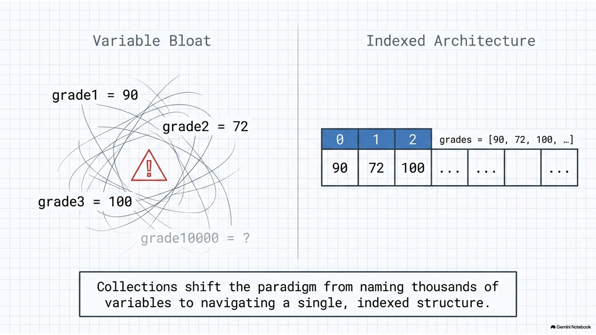
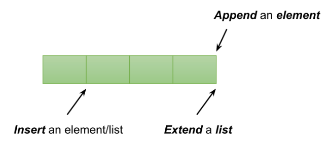
append
extend
insert
students = ['01-nick', '02-albert', '03-jie'] st = ['04-jason', '05-allen'] students.append('06-lisa') # 尾端新增單一元素 students.extend(st) # 合併 list st students.insert(0, '07-maggie') # 在最前面位置 0 插入元素
remove
pop
clear
students = ['nick', 'albert', 'jie'] students.remove('nick') # 刪除 'nick' popped = students.pop() # 移除並回傳最後一個元素 ('jie') print(popped) popped_first = students.pop(0) # 移除第一個元素 students.clear() # 刪除所有內容
sort()
sorted()
grades = [90, 72, 100, 60] # 1. 使用 sorted (原 grades 不變) new_grades = sorted(grades) print(grades) # [90, 72, 100, 60] print(new_grades) # [60, 72, 90, 100] # 2. 使用 sort (直接修改原 grades) grades.sort() print(grades) # [60, 72, 90, 100]
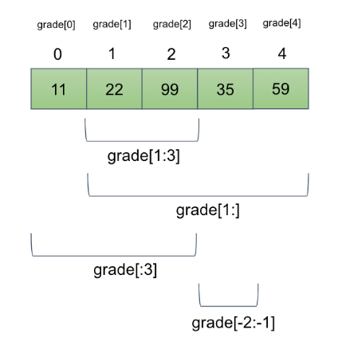
list[start:end]
start
end
-1
grade = [11, 22, 99, 35, 59] print(grade[0]) # 11 print(grade[-1]) # 59 print(grade[1:3]) # 索引 1 到 2 -> [22, 99] print(grade[1:]) # 索引 1 之後的所有元素 -> [22, 99, 35, 59] print(grade[:3]) # 索引 3 之前的所有元素 -> [11, 22, 99]
for
enumerate
grade = [11, 22, 99, 35, 59] # 1. 遍歷求加總與平均 total = 0 for g in grade: total += g print("平均分數:", total // len(grade)) # 2. 調分練習：不及格者一律調整為 60 分 for i, g in enumerate(grade): if g < 60: grade[i] = 60
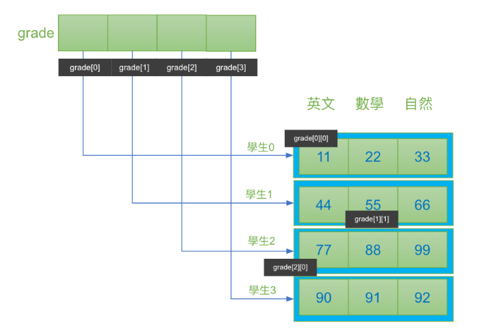
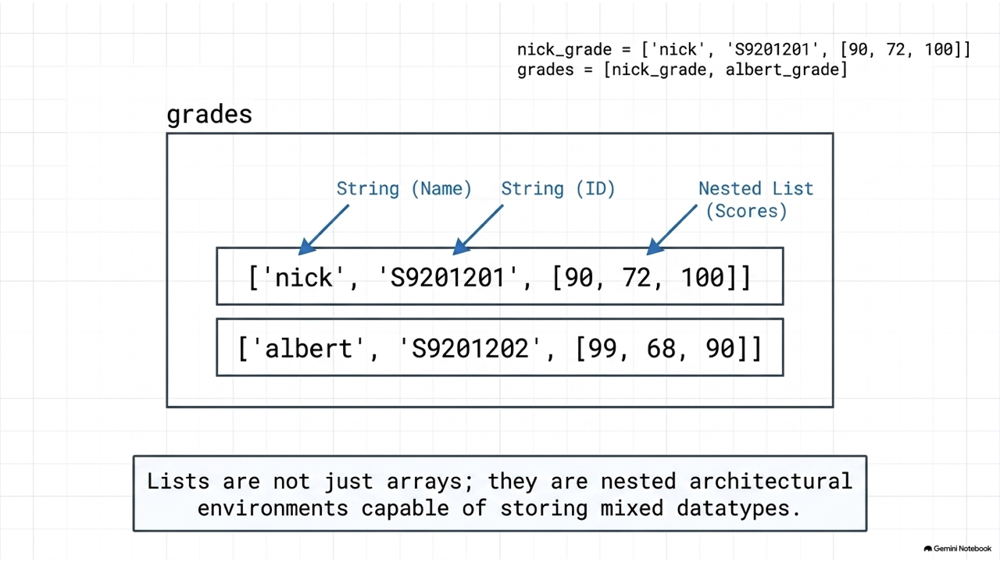
# 4 位學生，每人 3 科的成績矩陣 grade_matrix = [[11, 22, 33], [44, 55, 66], [77, 88, 99], [90, 91, 92]] # 橫向加總 (每個學生的總成績) st_sum = [0, 0, 0, 0] for idx, st in enumerate(grade_matrix): st_sum[idx] = sum(st) # 縱向加總 (每個科目的總和) subj_sum = [0, 0, 0] for st in grade_matrix: for i, g in enumerate(st): subj_sum[i] += g
[expression for item in iterable if condition]
# 1. 傳統 append 寫法 a = [] for i in range(10): a.append(i) # 2. 列表推導式寫法 (等價於上方) b = [i for i in range(10)] # 3. 取得 0 到 9 之間的偶數 evens = [i for i in range(10) if i % 2 == 0] # [0, 2, 4, 6, 8]
key
lambda
# 欄位為: [英文, 數學, 物理] grade_data = [[11, 22, 33], [90, 91, 92], [77, 88, 99], [44, 55, 66]] # 預設排序 (依據第一個元素排序) print(sorted(grade_data)) # [[11,22,33], [44,55,66], [77,88,99], [90,91,92]] # 依據各科總分排序 (比較各子 list 的總和) g_sum = sorted(grade_data, key=lambda x: sum(x)) # 依據最後一科 (物理) 排序 g_last = sorted(grade_data, key=lambda x: x[-1])
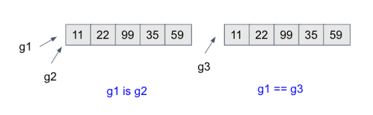
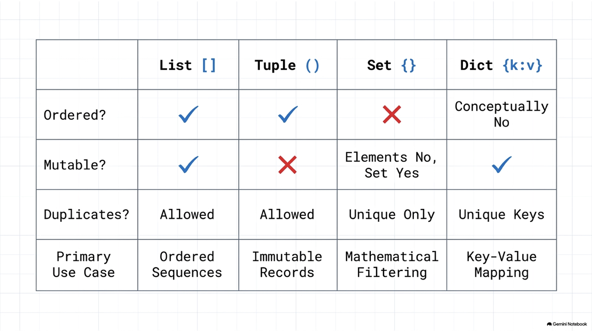
==
is
grade = [11, 22, 99, 35, 59] g = grade gc = grade.copy() # 建立一個複本，值相同但位址不同 print(grade == g) # True (值相等) print(grade is g) # True (同一參考) print(grade == gc) # True (值相等) print(grade is gc) # False (不同位址)
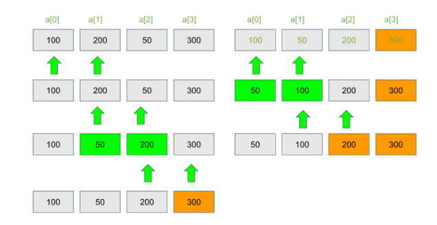
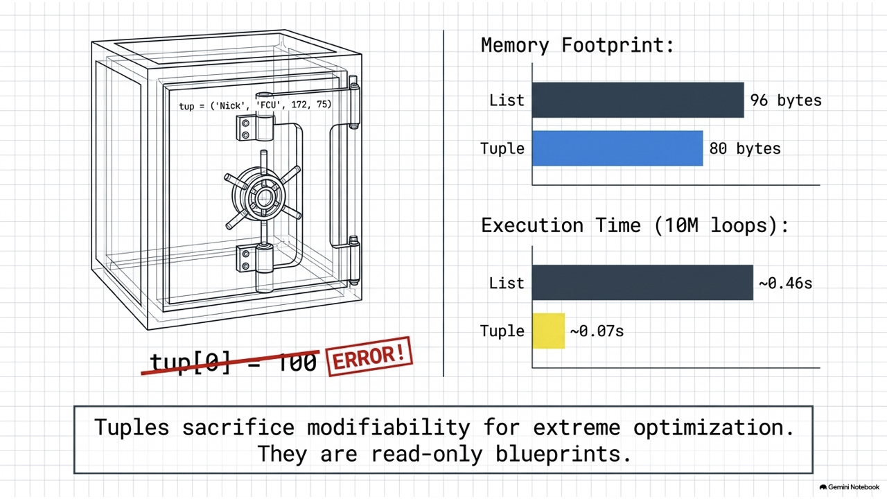
import random # 建立一個 1~100 隨機數的 list rand_list = [random.randint(1, 100) for _ in range(10)] size = len(rand_list) for i in range(1, size): # 最後的 i 個已經排好了，不用再比 for j in range(0, size - i): if rand_list[j] > rand_list[j + 1]: # 相鄰元素交換 rand_list[j], rand_list[j + 1] = rand_list[j + 1], rand_list[j]
split()
join()
city_string = "Taichung Taipei Kaoshiung" # 切割為 list city_list = city_string.split() # ['Taichung', 'Taipei', 'Kaoshiung'] # 以特定符號連接 list 元素 joined_str_1 = '-'.join(city_list) # "Taichung-Taipei-Kaoshiung" joined_str_2 = ' * '.join(city_list) # "Taichung * Taipei * Kaoshiung"
給定程式碼如下，請選出執行後的正確輸出結果。
list1 = [1, 2, 3, 4, 5] list2 = list1[1:4] list2[0] = 99 print(list1, list2)
A. [1, 99, 3, 4, 5] [99, 3, 4]
[1, 99, 3, 4, 5] [99, 3, 4]
B. [1, 2, 3, 4, 5] [99, 3, 4]
[1, 2, 3, 4, 5] [99, 3, 4]
C. [1, 2, 3, 4, 5] [99, 2, 3, 4]
[1, 2, 3, 4, 5] [99, 2, 3, 4]
D. [1, 99, 99, 99, 5] [99, 3, 4]
[1, 99, 99, 99, 5] [99, 3, 4]
解析：
list1[1:4]
[2, 3, 4]
list2[0] = 99
list2
list1
[1, 2, 3, 4, 5]
[99, 3, 4]
在 Python 列表中，remove() 方法與 pop() 方法最核心的區別是什麼？
remove()
pop()
A. remove() 回傳被刪除的元素值，而 pop() 不回傳任何值。
B. remove() 依據索引位置刪除元素，而 pop() 依據元素值刪除元素.
C. remove() 依據元素值刪除元素，而 pop() 依據索引位置刪除元素並回傳該值。
D. remove() 可以清空整個列表，而 pop() 只能刪除最後一個元素。
remove(val)
val
None
ValueError
pop(index)
index
pop(-1)
()
tup1 = ('Nick', 'FCU', 172, 75) tup2 = (1, 2, 3, 4, 5) tup3 = "a", "b", "c", "d" # 不加括號預設也是 Tuple # 唯讀性驗證 (執行此行會發生 TypeError) # tup2[0] = 100 t = ('a', 'b', 'c', 'd', 'e') print(t[0]) # 支援索引取得 print(t[1:4]) # 支援切片
# 元組打包 person = ('male', 10, 'nick') # 元組開箱 sex, age, name = person print(sex) # 'male' print(age) # 10 print(name) # 'nick'
def run_command(cmd): match cmd: case ["move", direction]: print(f"移動到方向: {direction}") case ["jump", x, y]: print(f"跳躍到座標: ({x}, {y})") case ["attack", *targets]: # 解構剩餘所有元素 print(f"攻擊多個目標: {targets}") case _: print("無法識別的指令") run_command(["move", "North"]) run_command(["attack", "enemy1", "enemy2"])
給定程式碼如下，請選出執行後的輸出結果。
tup = (1, 2, [3, 4]) tup[2][0] = 99 print(tup)
A. (1, 2, [3, 4]) 並且報 TypeError 錯誤
(1, 2, [3, 4])
TypeError
B. (1, 2, [99, 4]) 並且順利執行
(1, 2, [99, 4])
C. (1, 2, [99, 99]) 並且順利執行
(1, 2, [99, 99])
D. 程式拋出 IndexError
IndexError
tup
tup[2] = 5
[3, 4]
tup[2][0] = 99
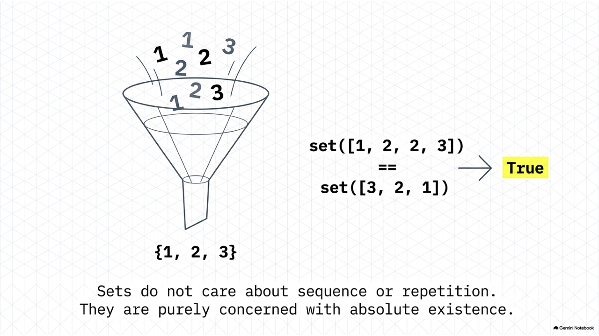
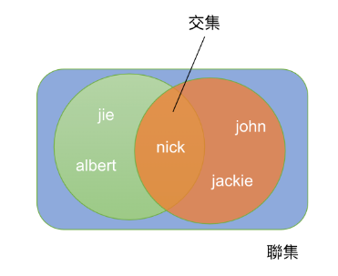
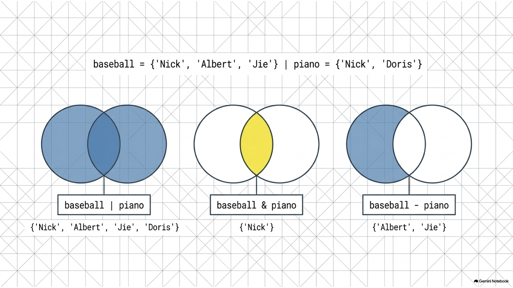
&
-
baseball = ['Nick', 'Albert', 'Jie'] piano = ['Nick', 'Doris'] highGrade = ['Nick', 'Doris', 'Anna'] baseballSet = set(baseball) pianoSet = set(piano) # 1. 聯集 (兩社團所有的不重複人名) community = baseballSet | pianoSet # {'Nick', 'Albert', 'Jie', 'Doris'} # 2. 交集 (高分群且參加社團者) commAndHigh = community & set(highGrade) # {'Nick', 'Doris'}
add()
discard()
in
basketball = set() basketball.add('Alex') basketball.add('Alex') # 重複新增，不會出錯也不會增加 # 刪除 basketball.remove('Alex') # basketball.remove('Peter') # KeyError basketball.discard('Peter') # 失敗，但不會出錯 print('Alex' in basketball) # False (查詢)
下列布林表達式執行後的結果為何？
print(set([1, 2, 2, 3]) == set([3, 2, 1]))
A. True
True
B. False
False
C. TypeError
D. None
set([1, 2, 2, 3])
{1, 2, 3}
{3, 2, 1}
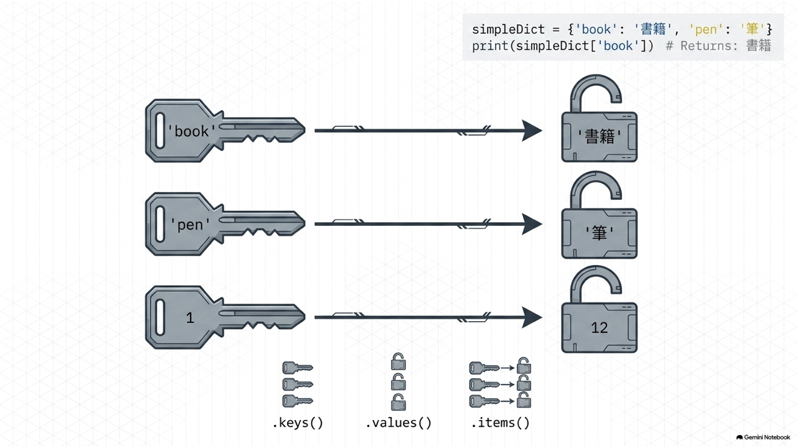
{}
dict()
family = {'dad': 'Jack', 'mom': 'LiLi', 'size': 2} # 新增/修改鍵值對 (若 key 存在則覆蓋，不存在則新增) grade = {1: 12, 2: 100} grade[3] = 90 # 新增鍵 3 grade[2] = 95 # 修改鍵 2 的值 # 刪除鍵值對 (使用 del 或 pop) del grade[1] popped_val = grade.pop(3) # 移除並回傳鍵 3 的值 (90)
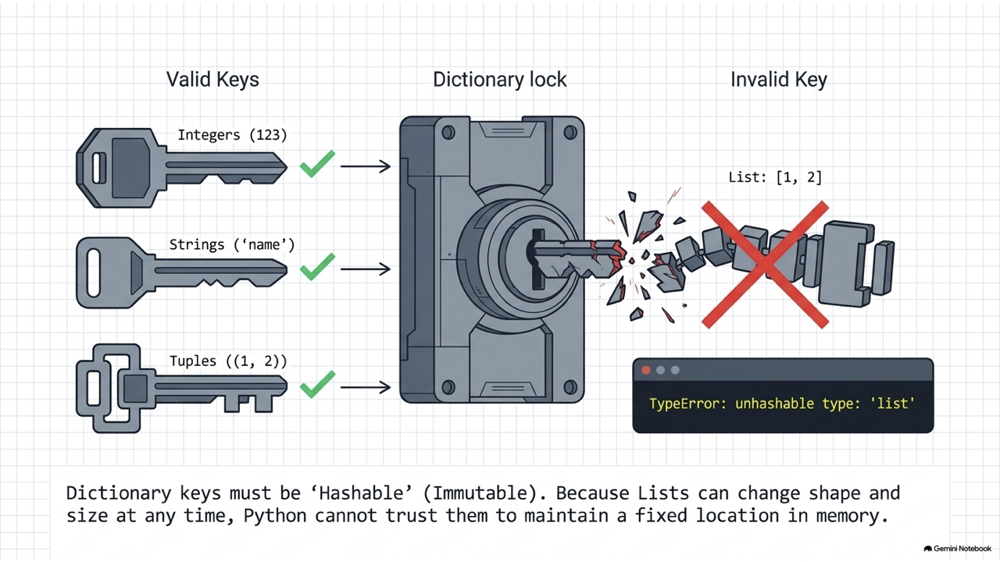
dict1 = {'apple': 10, 'banana': 20} dict2 = {'banana': 30, 'cherry': 40} # 1. 字典合併 (重複 key 則以後者為準，不改變原字典) merged = dict1 | dict2 print(merged) # {'apple': 10, 'banana': 30, 'cherry': 40} print(dict1) # {'apple': 10, 'banana': 20} # 2. 字典原地更新 dict1 |= dict2 print(dict1) # {'apple': 10, 'banana': 30, 'cherry': 40}
simpleDict = {'book': '書籍', 'pen': '筆'} # 走訪所有的 keys for k in simpleDict.keys(): print(k) # 走訪所有的 items (包含鍵與值) for k, v in simpleDict.items(): print(f"Key: {k}, Value: {v}") # 取得特定鍵 (若鍵不存在可使用 get 避免程式出錯) print(simpleDict.get('bag', '找不到該鍵')) # 回傳預設值 "找不到該鍵"
zip
strict=True
std = ['nick', 'john', 'mac'] grades = [100, 90, 80] # 1. 直接以 zip 轉成 dict std_dict = dict(zip(std, grades, strict=True)) # 2. 字典推導式 (Dict Comprehension) # 語法: {key_expr: value_expr for item in iterable} dict_comp = {k: v for k, v in zip(std, grades, strict=True)}
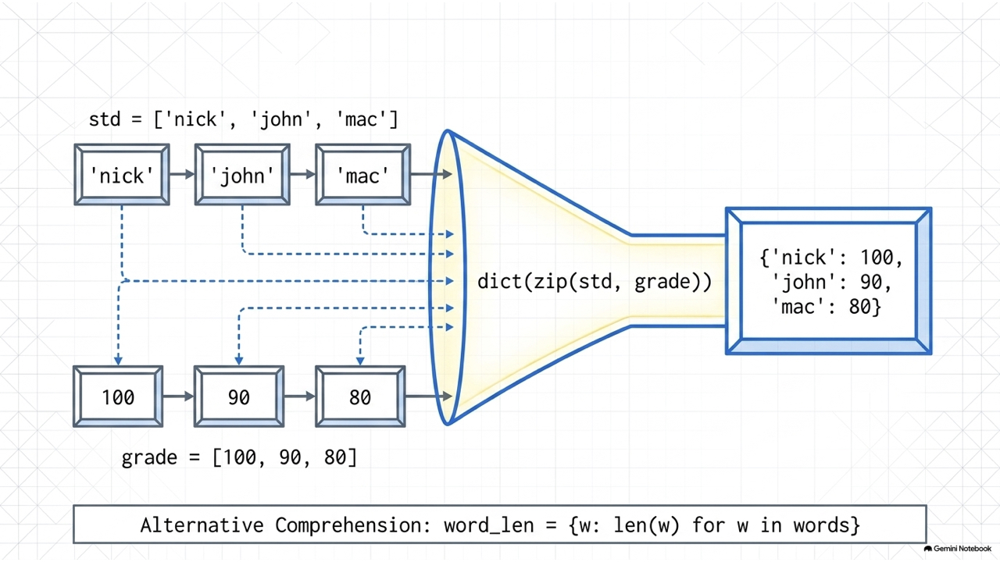
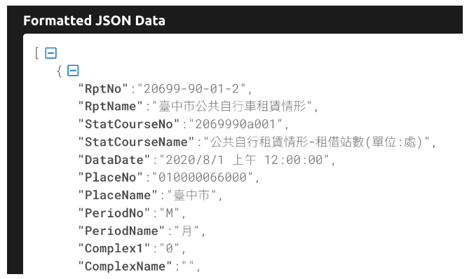
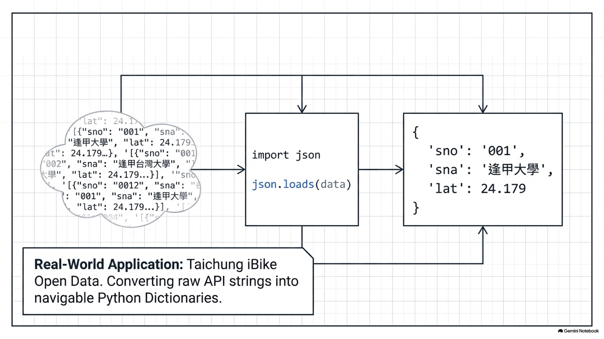
json.loads()
json.dumps()
import json # JSON 格式字串 gStr = '{"eng": 60, "math": 78, "phy": 100}' # 1. 載入 (JSON -> Dict) gDict = json.loads(gStr) print(gDict['eng']) # 60 # 2. 輸出 (Dict -> JSON) json_output = json.dumps(gDict)
給定程式碼如下，請選出正確的輸出結果。
info = {'name': 'Nick', 'age': 20} print(info.get('score', 60), info.get('age', 60))
A. None 20
None 20
B. 60 60
60 60
C. 60 20
60 20
D. 程式拋出 KeyError
KeyError
dict.get(key, default)
default
info.get('score', 60)
'score'
info
60
info.get('age', 60)
'age'
20
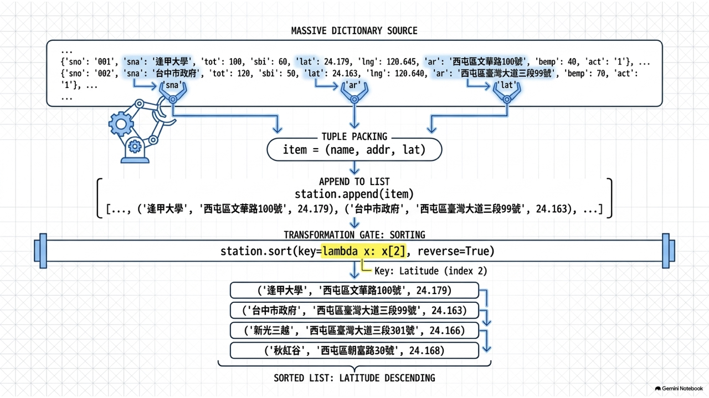
{ "retVal": { "2001": { "sno": "2001", "sna": "逢甲大學", "tot": "40", "sbi": "24", "sarea": "西屯區" } } }
retVal
tot
sbi
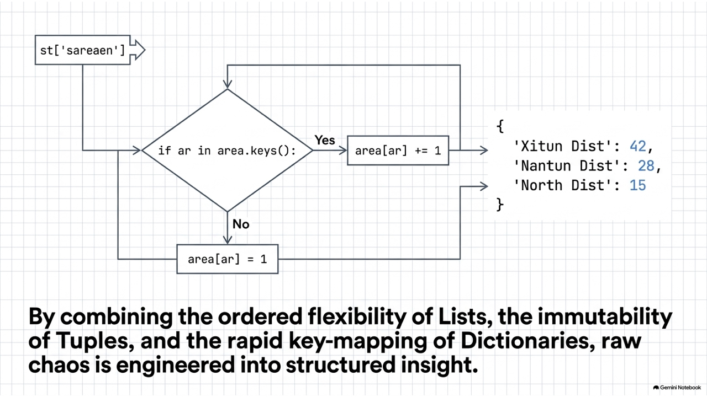
import json # data = json.loads(api_response) stations = data["retVal"] for sno, info in stations.items(): name = info["sna"] total = int(info["tot"]) available = int(info["sbi"]) area = info["sarea"] # 計算充足率 ratio = (available / total) * 100 print(f"{area} | {name} | 可借: {available} | 充足率: {ratio:.1f}%")